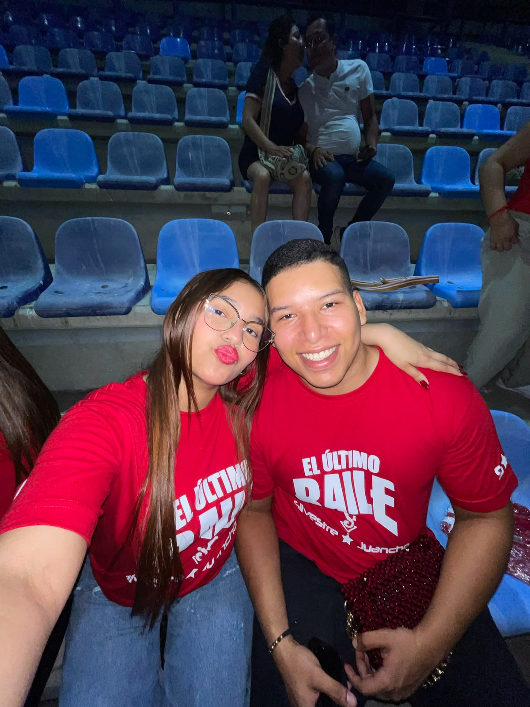
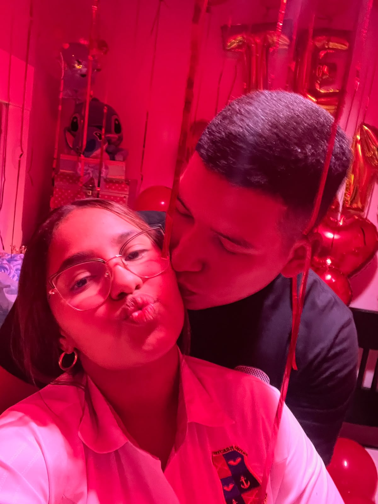
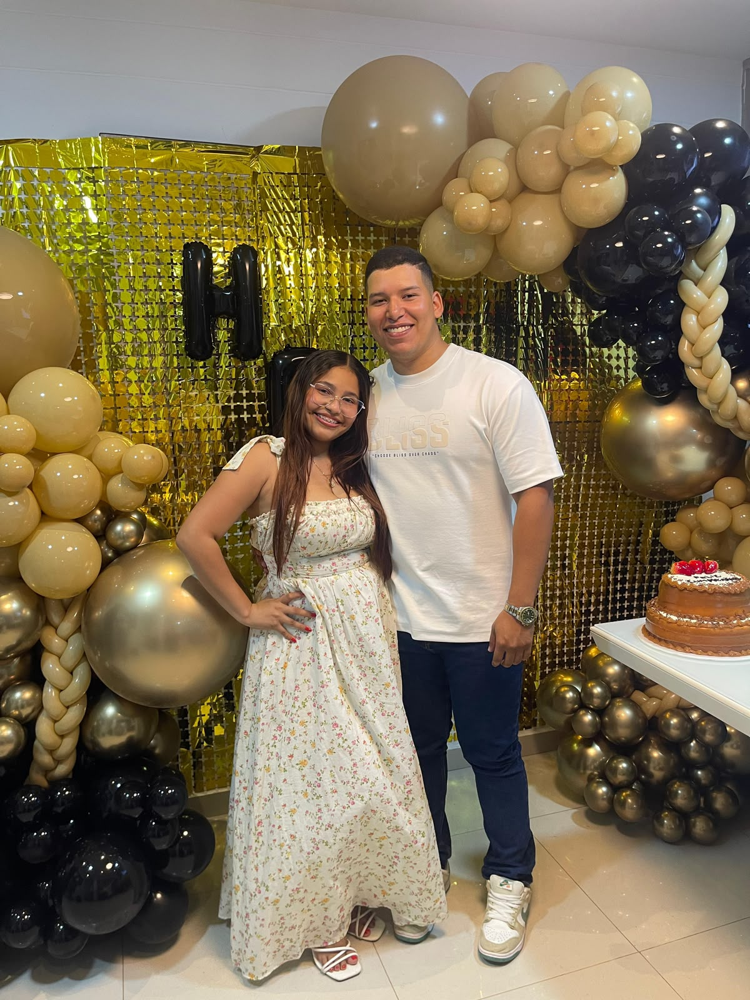

Feliz Día de las
Flores Amarillas
Ana Sofia 💖
21 de Septiembre

En este día especial, quiero que sepas...
Eres la luz que ilumina mi vida como el amarillo de estas flores.
Para ti, con amor
21 de Septiembre
En este día especial, quiero que sepas...
Eres la luz que ilumina mi vida como el amarillo de estas flores.
Para ti, con amor
Mi princesita 💖, gracias por existir y llenar mis días de alegría. Espero que este pequeño detalle te saque una hermosa sonrisa hoy. Eres mi flor más preciosa.



Siempre juntos